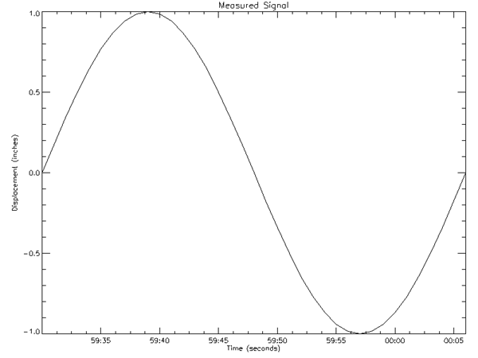
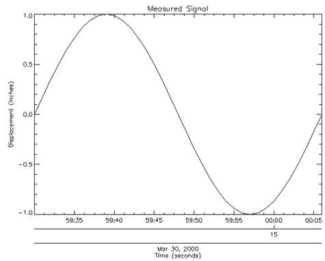
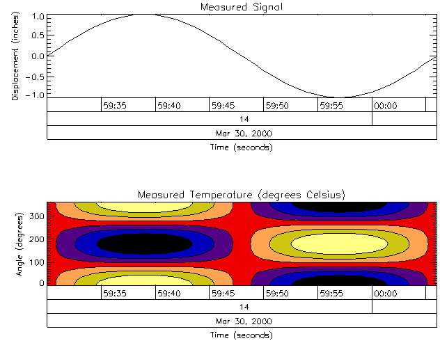

The LABEL_DATE function can be used, in conjunction with the [XYZ]TICKFORMAT keywords to IDL plotting routines, to easily label axes with dates and times.
This routine is written in the IDL language. Its source code can be found in the file
label_date.pro
in the
lib
subdirectory of the IDL distribution.
Result = LABEL_DATE( [, DATE_FORMAT = string/string array ]
[, AM_PM =2-element vector of strings]
[, DAYS_OF_WEEK =7-element vector of strings]
[, MONTHS =12-element vector of strings] [, OFFSET = value ] [, / ROUND_UP ] )
and then,
PLOT, x , y , XTICKFORMAT = 'LABEL_DATE'
When called with no arguments to initialize a date format (as shown in the first syntax line above), LABEL_DATE returns zero. Calling LABEL_DATE in this manner initializes variables in the label_date_com COMMON block.
When called to supply the value of one of the [XYZ]TICKFORMAT keywords to an IDL plotting routine (as shown in the second syntax line above), arguments representing the axis, data range, etc. are supplied by the plotting routine. In this situation, LABEL_DATE returns a string formatted with the date format information supplied by the previous call.
If LABEL_DATE is being called manually to initialize the date format, it should be called with no arguments and the DATE_FORMAT keyword should be set.
If LABEL_DATE is called automatically by a plotting routine to supply values for axis ticks, the appropriate arguments are supplied by the plotting routine.
Note: The settings for LABEL_DATE remain in effect for all subsequent calls to LABEL_DATE. To restore any default settings, call LABEL_DATE again with the appropriate keyword set to either an empty string ('') or to 0, depending upon the data type of that keyword.
Set this keyword to a two-element string array that contains the names to be used with '%A'. The default is ['am','pm'].
Set this keyword to a format string or array of format strings. Each string corresponds to an axis level as provided by the [XYZ]TICKUNITS keyword to the plotting routine. If there are fewer strings than axis levels, then the strings are cyclically repeated. A string can contain any of the following codes:
|
Code |
Description |
|---|---|
|
%M |
Month name |
|
%N |
Month number (two digits) |
|
%D |
Day of month (two digits) |
|
%Y |
Year (four digits, or five digits for negative years) |
|
%Z |
Last two digits of the year |
|
%W |
Day of the week |
|
%A |
AM or PM (%H is then 12-hour instead of 24-hour) |
|
%H |
Hours (two digits) |
|
%I |
Minutes (two digits) |
|
%S |
Second (two digits), followed optionally by %n, where n is an integer (0-9) representing the number of digits after the decimal point for seconds. The default is no decimal places. |
|
%% |
Represents the % character |
Other items you can include can consist of:
If DATE_FORMAT is not specified then the default is the standard 24-character system format,
'%W %M %D %H:%I:%S %Y'
.
The following table contains some examples of DATE_FORMAT strings and the resulting output:
|
DATE_FORMAT String |
Example Result |
|---|---|
|
'%D/%N/%Y' |
11/12/1993 |
|
'%M!C%Y' Note: !C is the code for a newline character |
Dec
|
|
'%H:%I:%S' |
21:33:58 |
|
'%H:%I:%S%3' |
21:33:58.125 |
|
'%W, %M %D, %H %A' |
Sat, Jan 01, 9 p.m. |
|
'%S seconds' |
60 seconds |
Set this keyword to a seven-element string array that contains the names to be used with '%W'. The default is the three-letter English abbreviations,
['Sun, 'Mon', 'Tue', 'Wed', 'Thu', 'Fri', 'Sat']
.
Set this keyword to a twelve-element string array that contains the names to be used with '%M'. The default is the three-letter English abbreviations,
['Jan', 'Feb',…, 'Dec']
.
Set this keyword to a value representing the offset to be added to each tick value before conversion to a label. This keyword is usually used when your axis values are measured relative to a certain starting time. In this case, OFFSET should be set to the Julian date of the starting time.
Set this keyword to force times to be rounded up to the nearest minute after the 30 second mark in the DATE_FORMAT string. The default is for times to be truncated to the smallest time unit.
Note: If ROUND_UP is set, it will remain set unless set back to 0.
This example creates a sample plot that has a date axis from Jan 1 to June 30, 2000:
; Create format strings for a two-level axis:
dummy = LABEL_DATE(DATE_FORMAT=['%D-%M','%Y'])
; Generate the Date/Time data
time = TIMEGEN(START=JULDAY(1,1,2000), FINAL=JULDAY(6,30,2000))
; Generate the Y-axis data
data = RANDOMN(seed, N_ELEMENTS(time))
; Plot the data
PLOT, time, data, XTICKUNITS = ['Time', 'Time'], $
XTICKFORMAT='LABEL_DATE', XSTYLE=1, XTICKS=6, YMARGIN=[6,2]
The following examples show how to display 1D and 2D date/time data.
Date/time data usually comes from measuring data values at specific times. For example, the displacement (in inches) of an object might be recorded at every second for 37 seconds after the initial recording of 59 minutes and 30 seconds after 2 o'clock pm (14 hundred hours) on the 30th day of March in the year 2000 as follows
number_samples = 37
date_time = TIMEGEN(number_samples, UNITS = 'Seconds', $
START = JULDAY(3, 30, 2000, 14, 59, 30))
displacement = SIN(10.*!DTOR*FINDGEN(number_samples))
Note: See Date/Time Data for information on date- and time-based data.
Normally, this type of data would be imported into IDL from a data file. However, this section is designed specifically to show how to display date/time data, not how to import data from a file; therefore, the data for this example is created with the above IDL commands.
Before displaying this one-dimensional data with the PLOT routine, the format of the date/time values is specified through the LABEL_DATE routine as follows
date_label = LABEL_DATE(DATE_FORMAT = ['%I:%S'])
where %I represents minutes and %S represents seconds.
The resulting format is specified in the call to the PLOT routine with the XTICKFORMAT keyword:
PLOT, date_time, displacement, /XSTYLE, $
; displaying titles.
TITLE = 'Measured Signal', $
XTITLE = 'Time (seconds)', $
YTITLE = 'Displacement (inches)', $
; applying date/time formats to X-axis labels.
XTICKFORMAT = 'LABEL_DATE', $
XTICKUNITS = 'Time', $
XTICKINTERVAL = 5
The XTICKUNITS keyword is set to note the tick labels contain date/time data. The XTICKINTERVAL keyword is set to place the major tick marks at every five second interval.
These keyword settings produce the following results:

The above display shows the progression of the date/time variable, but it does not include all of the date/time data we generated with the TIMEGEN routine. This data also includes hour, month, day, and year information. IDL can display this information with additional levels to the date/time axis. You can control the number of levels to draw and the units used at each level with the XTICKUNITS keyword. You can specify the formatting for these levels by changing the DATE_FORMAT keyword setting to the LABEL_DATE routine:
date_label = LABEL_DATE(DATE_FORMAT = $
['%I:%S', '%H', '%D %M, %Y'])
where %H represents hours, %D represents days, %M represents months, and %Y represents years. Notice DATE_FORMAT is specified with a three element vector. Date/time data can be displayed on an axis with three levels. The format of these levels are specified through this vector.
In this example, the first level (closest to the axis) will contain minute and second values separated by a colon (%I:%S). The second level (just below the first level) will contain the hour values (%H). The third level (the final level farthest from the axis) will contain the day and month values separated by a space and year value separated from the day and month values by a comma (%D %M, %Y).
Besides the above change to the LABEL_DATE routine, you must also change the settings of the keywords to the PLOT routine to specify a multiple level axis:
PLOT, date_time, displacement, /XSTYLE, $
; displaying titles.
TITLE = 'Measured Signal', $
XTITLE = 'Time (seconds)', $
YTITLE = 'Displacement (inches)', $
; applying date/time formats to X-axis labels.
POSITION = [0.2, 0.25, 0.9, 0.9], $
XTICKFORMAT = ['LABEL_DATE', 'LABEL_DATE', 'LABEL_DATE'], $
XTICKUNITS = ['Time', 'Hour', 'Day'], $
XTICKINTERVAL = 5
The POSITION keyword is set to allow the resulting display to contain all three levels and the title of the date/time axis. The XTICKFORMAT is now set to a string array containing an element for each level of the axis. The XTICKUNITS keyword is set to note the unit of each level.
These keyword settings produce the results shown in the following figure.

Notice the three levels of the X-axis. These levels are arranged as specified by the previous call to the LABEL_DATE routine.
The settings we used to display our date/time data could have been specified through system variables instead of keywords. The following table shows the relationship between these keywords and their system variables:
|
Keywords |
System Variables |
|---|---|
|
[XYZ]TICKUNITS |
![XYZ].TICKUNITS |
|
[XYZ]TICKINTERVAL |
![XYZ].TICKINTERVAL |
|
[XYZ]TICKLAYOUT |
![XYZ].TICKLAYOUT |
Usually, keywords are used more frequently than system variables, but system variables are better when trying to establish a consistent display style. For example, we could have established a date/time axis style with these system variables before producing our previous display and the display shown in Displaying Date/Time Data on a Contour Display :
; Establishing an axis style.
!X.TICKFORMAT = ['LABEL_DATE', 'LABEL_DATE', 'LABEL_DATE']
!X.TICKUNITS = ['Time', 'Hour', 'Day']
!X.TICKINTERVAL = 5
!X.TICKLAYOUT = 2
; Displaying data.
PLOT, date_time, displacement, /XSTYLE, $
TITLE = 'Measured Signal', $
XTITLE = 'Time (seconds)', $
YTITLE = 'Displacement (inches)', $
POSITION = [0.2, 0.7, 0.9, 0.9]
CONTOUR, temperature, date_time, angle, /FILL, $
LEVELS = BYTSCL(INDGEN(8)), /XSTYLE, /YSTYLE, $
C_COLORS = BYTSCL(INDGEN(8)), /NOERASE, $
TITLE = 'Measured Temperature (degrees Celsius)', $
XTITLE = 'Angle (degrees)', $
YTITLE = 'Time (seconds)', $
POSITION = [0.2, 0.25, 0.9, 0.45]
CONTOUR, temperature, date_time, angle, /OVERPLOT, $
LEVELS = BYTSCL(INDGEN(8))
!X.TICKLAYOUT = 0
!X.TICKINTERVAL = 0
!X.TICKUNITS = ''
!X.TICKFORMAT = ''
Notice these system variables are set to their default values after the two displays are shown. When using system variables instead of keywords, remember to reset the system variables back to their default values. The above example produces the following results.

|
Pre 4.0 |
Introduced |
[XYZ]TICKFORMAT , CALDAT , JULDAY , SYSTIME , TIMEGEN , Format Codes .